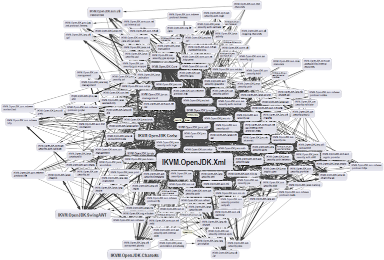

Why should I care about Docker?
Chris Winters
What are we going to do?
- This is not a Docker tutorial
- You don't need to to know anything about Docker
- My aim: convey Docker's powerful view of the world
- ...and why that's useful for you
Up front: here's why
- Docker lets you name and share things you build
- Docker runtime constraints move you to 12 Factor thinking
Hard problems
There are two hard problems in computer science:
- Naming things
- Cache invalidation
Phil Karlton
(via Fowler)
Naming abstractions is even harder!
- Settled long ago on certain names
- "Save"? "File"? "Copy" and "Paste"?
- Settled on certain abstractions, gave them names

Another naming affordance
- Developer hedge of "Tags"
Temporal naming displacement
Our favorite: the version
- Single name we give our code at a point in time
- Semantic versioning is admirable
Downfalls of versions
- But what can you do with a version?
- Use it for distribution! And oh we do that...
- Alas, no code is an island...
DEPENDENCIES

(Source)
The dream of integrated software components
- You focus on your problem, plugin the rest
- We're closer to the dream than ever
- NPM, RubyGems, Maven, CPAN, PyPI
- ...but
Double-edged sword of easy and frequent
- Easy to version and distribute
- Which lets everyone frequently version and distribute
- All our dependencies do the same
- ...and their dependencies, and their dependencies
It feels like...

Docker images
- Docker image is the immutable result of a build
- Every one has a unique hash ID (like Git)
- A change to an image makes a new hash ID (like Git)
- One or more unique tags can reference that hash ID (like Git)
Images are for sharing
- Images are the granularity and means of distribution
docker pull--> Bring an image to medocker push--> Send an image somewhere else
An image is all the code you need
- Your code
- Your dependencies (and theirs)
- Your runtime and supporting libraries
- ...and it has a name!
What was a version again?
- A version is a concept at a point in time
- ...Docker makes that runnable!
Pull...
$ docker pull nktpro/swagger-cli:latest latest: Pulling from nktpro/swagger-cli 12b41071e6ce: Already exists a3ed95caeb02: Pull complete 92d79449cdd2: Pull complete 411450e8f560: Pull complete Digest: sha256:204aee80c9111fde723a94b3606061a02fe89743blah... Status: Downloaded newer image for nktpro/swagger-cli:latest
...and run
$ ls
... swagger.yaml ....
$ docker run -v $(pwd):/app \
nktpro/swagger-cli:latest \
validate /app/swagger.yaml
/app/swagger.yaml is valid
Tell docker to do something
$ docker run -v $(pwd):/app \
nktpro/swagger-cli:latest \
validate /app/swagger.yaml
Share our directory with the container
$ docker run -v $(pwd):/app \
nktpro/swagger-cli:latest \
validate /app/swagger.yaml
Our lovely name!
$ docker run -v $(pwd):/app \
nktpro/swagger-cli:latest \
validate /app/swagger.yaml
Command plus arguments
$ docker run -v $(pwd):/app \
nktpro/swagger-cli:latest \
validate /app/swagger.yaml
Things I don't care about anymore
- What language is this tool written in?
- What libraries does it use?
- Does it work with my version of ruby/python/java?
- Do I have to create a gemspec/virtualenv?
- How do I install this container?
...but I can find out if I want
- An image is the result of
docker build - Build uses a
Dockerfile Dockerfileis just text
Dockerfile for swagger-cli
FROM mhart/alpine-node:4.2.1 RUN npm install -g swagger-cli ENTRYPOINT ["swagger"]
Dockerfile is instructions
- Install everything you need
- ...but you don't have to start from scratch
FROM is sharing
- The first line of the
DockerfileisFROM - With another name!
- Someone else has done work for us!
- We can use it AS IS and build on it!
Rewind a sec... already exists?!
$ docker pull nktpro/swagger-cli:latest latest: Pulling from nktpro/swagger-cli 12b41071e6ce: Already exists ...
Remember: every image has a hash
- That image is cached by hash
- That cached image can be shared among multiple images
- For example, multiple images have
FROM alpine:3.4 - Docker only stores one of them and everyone uses it
Sharing code and runtime
- What does all this mean?
- You have a way to share your code
- ...plus its runtime
- ...and allow run as-is or extension
This Is Powerful!
Docker containers
- From earlier: Docker image is the result of a build
- Docker container is a running image
- "Can I run more than one container from the same image?"
Language shift
- Docker container is a process you execute
- "Can I run more than one process from the same binary?"
- Of course!
A container is a running process
- Think of it as a process plus all the stuff it needs to run
- Docker makes this explicit with STD(ERR|IN|OUT)
- But... "needs to run"?
What do you need to run?
- Environment
- Network
- STDIN/STDOUT/STDERR
- Storage
12 Factor: ?
- Who knows what 12 Factor apps are?
- (Generally, this is not a quiz)
12 Factor: Really?
- Who is using 12 Factor apps in production?
Similar to Docker: A way of viewing the world
- Stateless apps
- Configure via environment
- Use stateful services over the network
- Log as stream, not to files
- Others, see 12factor.net
Luring
Stateless
- Try your darndest not to need mutable files
- Think about what you're really using that file for
- Can you use a file over the network? (S3)
- Can you use a cache? (Redis, Memcache)
Environment for configuration
- Might feel very primitive -- simple keys and values????
- You can still have dynamic configuration files
- ...just put variances in the environment
- Database, S3, Redis, Email host, Log aggregator, etc
Stateful services
- Get out of the habit of storing state in-memory
- Even sessions -- load balanced sticky sessions are a crutch
- Connecting to write- and read-databases? Two URLs!
- Change is really, really easy
Logging streams
- A container's STDOUT/STDERR will be that of its running process
- Docker allows you to send that stream somewhere else with log drivers
- You don't have to rely on Docker logging
- Log aggregation services
How we log?
- Option 1: Every container sends its logs to aggregator
- Option 2: Containers send their logs to another container, which sends them to aggregator
- Hands for 1? 2?
Log forwarding container
- We use Loggly, but it's a commodity
rsyslogcontainer gets logs from other containers on host- Forwards over HTTPS to aggregator
What this enables
- Swap out logging containers...
- ...or tee logs to multiple aggregation services
- ...while containers are running, with no changes to them
- (we might miss one or two messages)
Other neat things
- Having all backend services on Docker means we can run on one machine
- Deploy different branches of many projects via Slack (and everyone does it!)
- Run full back-end stack on your laptop
Just operations?
/snooze Ugh, all this feels like "operational stuff"
"Just" operations!
But it's operational stuff the way unit tests are "quality stuff"

Shaping
It can shape how you think about problems
Powerful
That's a powerful thing indeed.